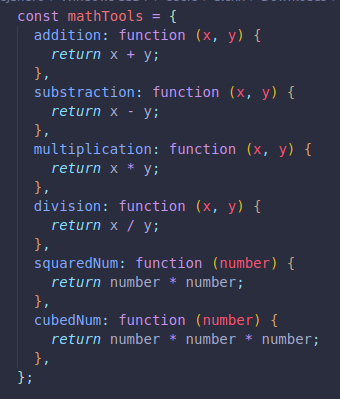
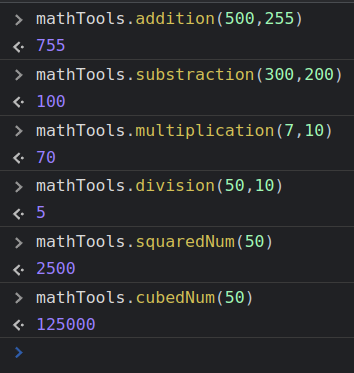
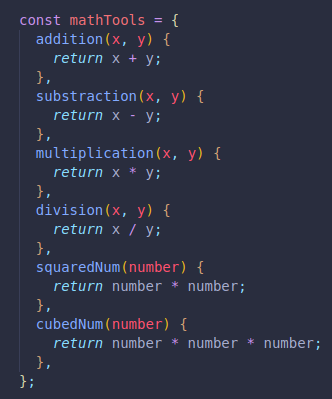
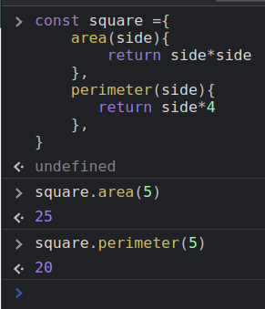

Methods help us do changes to our variables.
"x".toUpperCase() --> "X" (String Method)
"[1,2,3]".indexOf[2] --> 1 (Array Method)
A method is a function applied as a property to an object.
Every method is a function, but not vice-versa.
Here we have some examples, we made some functions inside an object.
And here they are ran at the console.
We can do this even more easily with the available shorthand.
We just need to remove the colon which separates the key from the value, and the word function.
They can be ran from the console with the exact same syntax than before.
Here we can use the methods area and perimeter to know exactly that, in this case for a square.
